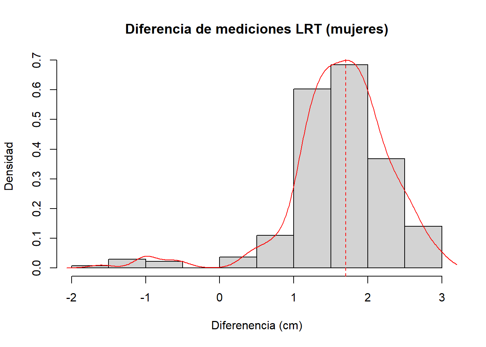
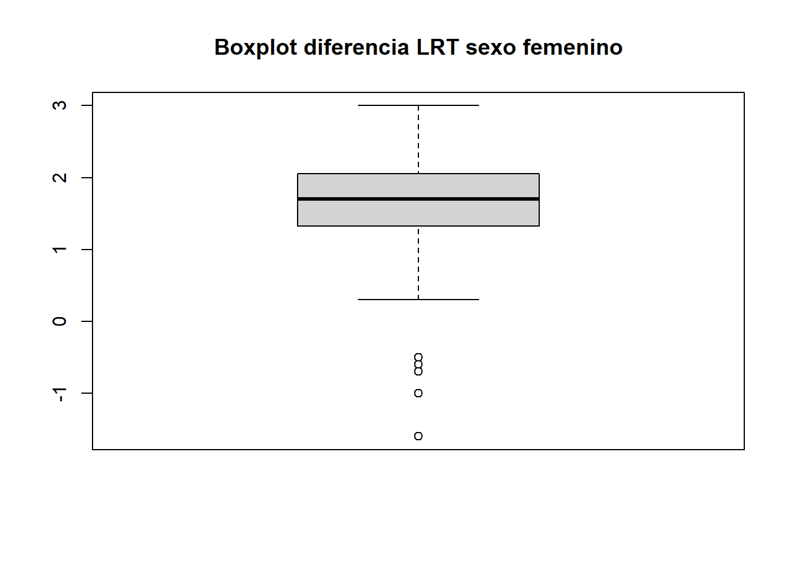
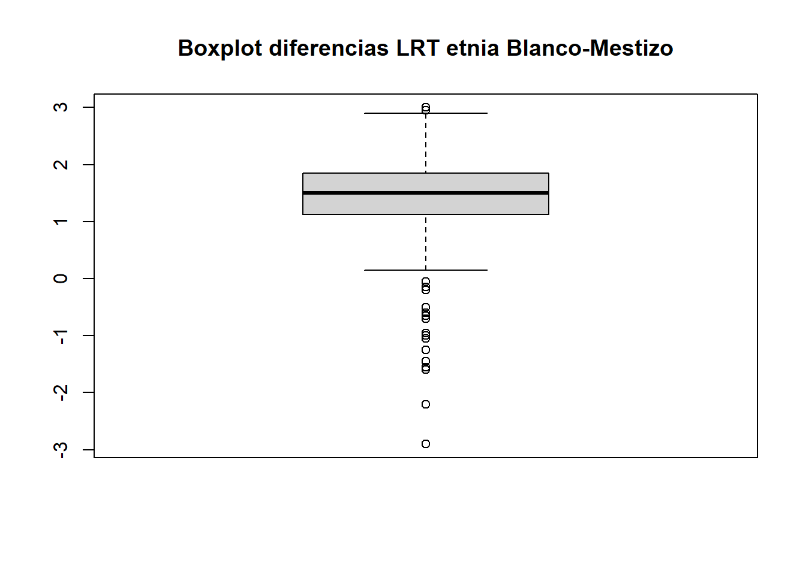
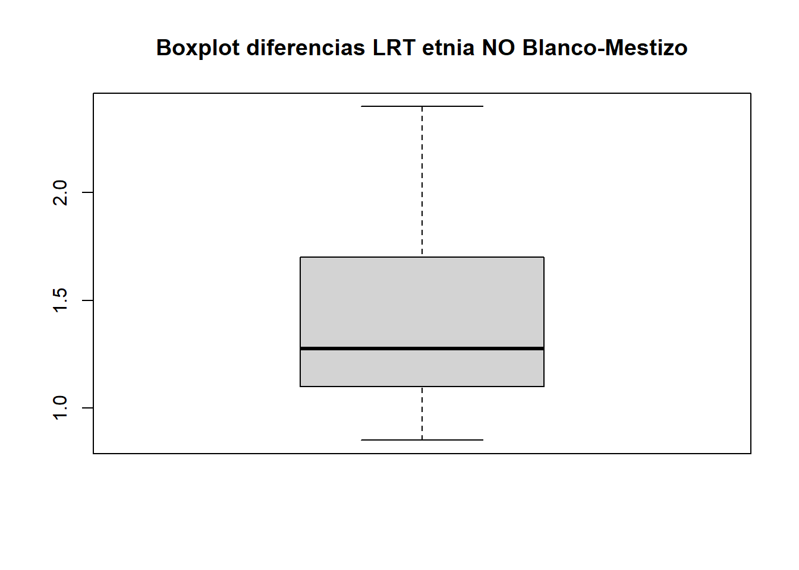
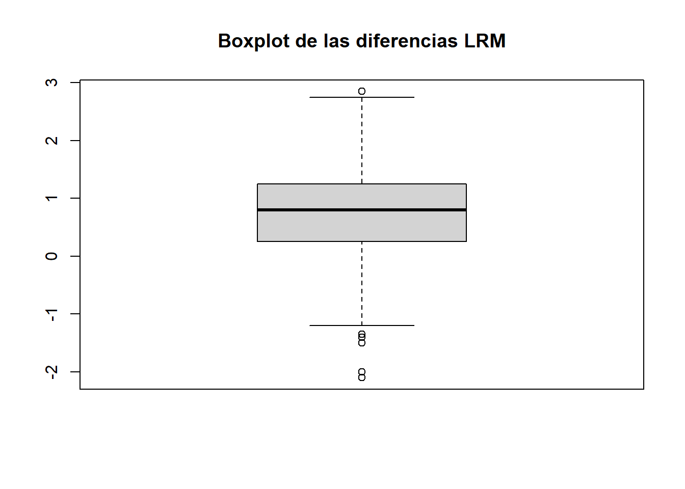
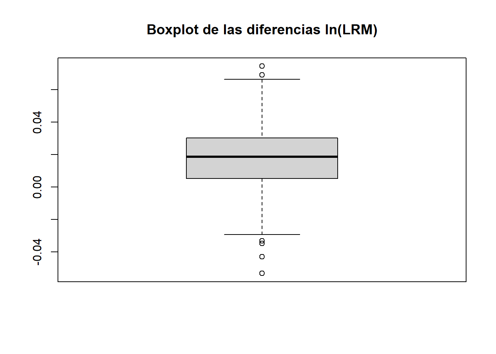

Hipótesis
Longitud rodilla-talón
Se quiere determinar si existe una diferencia significativa entre las mediciones realizadas con cinta métrica y con antropómetro medidas en los mismos individuos:
\[ \begin{cases} H_0: \, \, \, \mu_{(CM - A)} = 0 \\ H_1: \, \, \, \mu_{(CM-A)} \neq 0 \end{cases}\]
Donde \(CM-A\) representa las diferencias entre las mediciones realizadas con cinta métrica y las mediciones realizadas con antropómetro, y \(\mu_{(CM - A)}\) represneta la media de esas diferencias.
Inicialmente se hace una comparación gráfica de ambas técnicas a través de un box-plot:
Según el gráfico de cajas (box-plot), parece que existe diferencia entre las mediciones de la longitud desde la rodilla hasta el talón realizadas con cinta métrica y con antropómetro. Se evidencia que las mediciones realizadas con cinta métrica son en promedio superiores a las realizadas con antropómetro. Sin embargo, es necesario hacer una prueba estadística más formal. Para esto, se realizará el siguiente procedimiento:
Cálculo de diferencias: Después de la transformación, se calculan las diferencias entre los valores LRT_CM y LRT_A.
Evaluación de normalidad: Se realiza un test de normalidad sobre estas diferencias. Si las diferencias pasan esta prueba, se aplica directamente la prueba \(t\) para verificar si la media de las diferencias es igual a cero. Explícitamente el sistema de hipótesis de la prueba \(t\) de muestras pareadas (para media de las diferencias), es:
\[ \begin{cases} H_0: \textrm{La media de las diferencias es 0}\\ H_1: \textrm{La media de las diferencias NO es 0} \end{cases}\]
Es decir, que si NO se rechaza la hipótesis nula (\(H_0\)), las mediciones de LRT con cinta métrica serían equivalentes a las mediciones de LRT con antropómetro. En caso de rechazarse, se debe seguir con el paso 3.
- Revisión de simetría: Si no pasan el test de normalidad, se evalúa si las diferencias son simétricas utilizando el test MIRA de asimetría. Si las diferencias resultan ser simétricas, entonces se utiliza el test de Wilcoxon para verificar si la media es igual a cero. Explícitamente el sistema de hipótesis de la prueba de simetría \(MIRA\) es:
\[ \begin{cases} H_0: \textrm{Los datos son simétricos}\\ H_1: \textrm{Los datos NO son simétricos} \end{cases}\]
Entonces, si NO se rechaza la hipótesis nula, las diferencias resultarían ser simétricas y por lo tanto se aplica el test de Wilcoxon cuyo sistema de hipótesis es
\[ \begin{cases} H_0: \textrm{La media de las diferencias es 0}\\ H_1: \textrm{La media de las diferencias NO es 0} \end{cases}\]
Si NO se rechaza la hipótesis nula del test de Wilcoxon, entonces, si bien las diferencias no son de distribución normal, las mediciones de LRT con cinta métrica serían equivalentes a las mediciones de LRT con antropómetro. Si se rechaza la hipótesis nula de la prueba MIRA de asimetría, entonces no se puede aplicar el test de Wilcoxon, y por lanto se debe realizar el paso 4.
Realizar una transformación: Si las diferencias no son simétricas, puede realizarse una transformación (aplicar logaritmo natural o raíz cuadrada) a las mediciones originales (LRT_A y LRT_CM). Luego, se repiten los pasos 1, 2 y 3 usando los datos transformados. Si al final, con esta transformación, no se cumplen los requisitos para aplicar la prueba \(t\) o la de Wilcoxon, entonces, se continúa con el paso 5.
Última opción: Si las diferencias no son simétricas, finalmente se recurre al test del signo como última opción. Explícitamente, el sistema de hipótesis de la prueba del signo es:
\[ \begin{cases} H_0: \textrm{La mediana de las diferencias es 0}\\ H_1: \textrm{La mediana de las diferencias no es 0} \end{cases}\]
Cumpliendo con el procedimiento descrito, primero se calculan las diferencias entre las mediciones de ambos métodos y se verifica si esas diferencias siguen una distribución normal para determinar qué prueba estadística es adecuada para la comparación.


A continuación se presentan los resultados del test de normalidad de Lilliefors para la diferencia de las mediciones LRT_CM y LRT_A:
Lilliefors (Kolmogorov-Smirnov) normality test
data: LRT_dif
D = 0.1146, p-value < 2.2e-16Los resultados muestran un p-valor menor a \(0.05\) (resultado p-value < 2.2e-16). Esto significa que, con un nivel de confianza del \(95\%\), no podemos concluir que las diferencias entre las mediciones de rodilla - talón tomadas con una cinta métrica y con un antropómetro sigan una distribución normal, y por lo tanto no es posible usar la prueba t para muestras pareadas. Entonces, se debe realizar la prueba de asimetría.
Symmetry test
Null hypothesis: Data is symmetric around 1.42357274401473
data: LRT_dif
MI = -3.1113, B = 1000, p-value = 0.003Parece que las diferencias entre los valores no son simétricas (resultado p-value = 0.003). Esto significa que no se puede usar directamente el test de Wilcoxon. Dado que otra alternativa, el test del signo, es menos potente que el test de Wilcoxon, se intenta transformar los datos para que cumplan con el requisito de simetría y así poder aplicar Wilcoxon.
De modo, que ahora, el procedimiento que se realiza a continuación es el siguiente:
Transformación inicial: Primero, se aplica el logaritmo natural a los datos originales (LRT_A y LRT_CM).
Cálculo de diferencias: Después de la transformación, se calculan las diferencias entre los valores.
Evaluación de normalidad: Se realiza un test de normalidad sobre estas diferencias. Si las diferencias pasan esta prueba, se aplica directamente la prueba \(t\) para verificar si la media de las diferencias es igual a cero.
Revisión de simetría: Si no pasan el test de normalidad, se evalúa si las diferencias son simétricas utilizando el test MIRA de asimetría. Si las diferencias resultan ser simétricas, entonces se utiliza el test de Wilcoxon para verificar si la media es igual a cero.
Última opción: Si las diferencias no son simétricas incluso después de la transformación con logaritmo natural, finalmente se recurre al test del signo como última opción.
En resumen, este proceso busca ajustar los datos para que cumplan con los requisitos de pruebas estadísticas más precisas, garantizando resultados confiables. Sin embargo, si los datos no logran cumplir con los criterios necesarios, se utiliza un método alternativo, aunque menos potente.
Como se explicó previamente, el primer paso consiste en transformar los datos originales usando el logaritmo natural.
Después de esta transformación, se calculan las diferencias entre los valores transformados. Al observar el histograma de estas diferencias, se nota que la asimetría se ha reducido un poco. Sin embargo, visualmente parece que la media de las diferencias no es igual a cero. Para confirmar esto, seguimos el procedimiento previamente mencionado.
Primero, se aplica el test de normalidad de Lilliefors. Este test evalúa si las diferencias siguen una distribución normal. En este caso, el p-valor obtenido es menor a 0.05 (resultado p-value = 1.683e-10), lo que indica que las diferencias no siguen una distribución normal. Por lo tanto, no se puede utilizar la prueba t para verificar si la media de las diferencias es igual a cero.
Lilliefors (Kolmogorov-Smirnov) normality test
data: lLRT_dif
D = 0.086854, p-value = 1.683e-10A continuación, se realiza la prueba MIRA de simetría, que nos ayuda a decidir entre utilizar el test de Wilcoxon o el test del signo. Gracias a la transformación, las diferencias ahora pasan el test de simetría (resultado p-value = 0.234). Esto significa que las diferencias tienen una distribución simétrica, lo que permite aplicar el test de Wilcoxon.
Symmetry test
Null hypothesis: Data is symmetric around 0.0298703213502291
data: lLRT_dif
MI = -1.1297, B = 1000, p-value = 0.234Finalmente, se realiza la prueba de Wilcoxon para determinar si la media de las diferencias es igual a cero, lo que equivaldría a decir que las mediciones con cinta métrica (LRT_CM) son iguales a las realizadas con el antropómetro (LRT_A).
El test de Wilcoxon arroja un p-valor menor a 0.05 (resultado p-value < 2.2e-16). Esto significa que, con un 95% de confianza, hay evidencia estadística para afirmar que la media de las diferencias no es igual a cero. En otras palabras, las mediciones realizadas con cinta métrica NO SON EQUIVALENTES a las realizadas con el antropómetro.
Wilcoxon signed rank test with continuity correction
data: lLRT_CM and lLRT_A
V = 144597, p-value < 2.2e-16
alternative hypothesis: true location shift is not equal to 0
95 percent confidence interval:
0.02960577 0.03191015
sample estimates:
(pseudo)median
0.03074324 Análisis por separado
Por sexo
Se realiza un análisis separado por sexo debido a que, generalmente, las características anatómicas hacen que la talla promedio sea mayor en hombres que en mujeres. Por esta razón, se decide llevar a cabo un análisis de las pruebas de hipótesis diferenciando por sexo.
Este análisis tiene un propósito exclusivamente exploratorio: se busca determinar si los resultados obtenidos al analizar ambos sexos por separado difieren de aquellos obtenidos al analizar los datos combinados.
Masculino:
A continuación se muestra el histograma de la diferencia de las mediciones LRT (cinta métrica menos antropómetro) del sexo masculino, además se muestra el box-plot de estas diferencias. Gráficamene, se observa que las diferencias no parecen estar alrededor de cero.
Se aplica la prueba de normalidad de Lilliefors sobre las diferencias, y se obtiene p-value = 1.301e-11, como es menor a 0.05, se concluye que las diferencias no parecen seguir una distribución normal. Por lo que, siguiendo con el procedimiento descrito al inicio, se debe realizar la prueba de simetría.
Lilliefors (Kolmogorov-Smirnov) normality test
data: LRT_dif
D = 0.12805, p-value = 1.301e-11La prueba de simetría MIRA, muestra que las diferencias no son simétricas, por lo que se decide realizar la transformación (aplicar logaritmo natural a LRT_A y LRT_CM) y repetir el procedimiento.
Symmetry test
Null hypothesis: Data is symmetric around 1.21180811808118
data: LRT_dif
MI = -2.5266, B = 1000, p-value = 0.013Luego de aplicar la transformación, se calculan las diferencias. Se observa en el histograma y el box-plot que se logró corregir un poco la asimetría.

La prueba de Lilliefors sobre las diferencias de los datos transformados, muestran que nuevamente las diferencias no presentan normalidad, por lo que se aplica de nuevo el test de simetría MIRA.
Lilliefors (Kolmogorov-Smirnov) normality test
data: lLRT_dif
D = 0.12771, p-value = 1.513e-11Esta vez, las diferencias sí presentan simetría, entonces se decide aplicar la prueba de Wilcoxon.
Symmetry test
Null hypothesis: Data is symmetric around 0.0239790446800956
data: lLRT_dif
MI = -1.8983, B = 1000, p-value = 0.062La prueba de Wilcoxon, dice que con un 95% de confianza, al obtener un p-value < 2.2e-16, parece que las diferencias no parecen tener media cero, es decir, las mediciones de LRT con cinta métrica NO SON EQUIVALENTES a las obtenidas con antropómetro en la muestra con sexo masculino.
Wilcoxon signed rank test with continuity correction
data: lLRT_CM and lLRT_A
V = 35452, p-value < 2.2e-16
alternative hypothesis: true location shift is not equal to 0
95 percent confidence interval:
0.02388739 0.02663020
sample estimates:
(pseudo)median
0.02525077 Femenino:
A continuación se muestra el histograma de la diferencia de las mediciones LRT (cinta métrica menos antropómetro) del sexo femenino, además se muestra el box-plot de estas diferencias. Gráficamene, se observa que las diferencias no parecen estar alrededor de cero.


Se aplica la prueba de normalidad de Lilliefors sobre las diferencias, y se obtiene p-value = 1.024e-09, como es menor a 0.05, se concluye que las diferencias no parecen seguir una distribución normal. Por lo que, siguiendo con el procedimiento descrito al inicio, se debe realizar la prueba de simetría.
Lilliefors (Kolmogorov-Smirnov) normality test
data: LRT_dif
D = 0.11747, p-value = 1.024e-09La prueba de simetría MIRA, muestra que las diferencias son simétricas, por lo que puede aplicarse la prueba Wilcoxon de una vez.
Symmetry test
Null hypothesis: Data is symmetric around 1.63455882352941
data: LRT_dif
MI = -2.0377, B = 1000, p-value = 0.06La prueba de Wilcoxon, dice que con un 95% de confianza, al obtener un p-value < 2.2e-16, parece que las diferencias no parecen tener media cero, es decir, las mediciones de LRT con cinta métrica NO SON EQUIVALENTES a las obtenidas con antropómetro en la muestra con sexo femenino.
Wilcoxon signed rank test with continuity correction
data: mujeres$LRT_CM and mujeres$LRT_A
V = 36889, p-value < 2.2e-16
alternative hypothesis: true location shift is not equal to 0
95 percent confidence interval:
1.600065 1.749996
sample estimates:
(pseudo)median
1.675005 Por etnia
Se realiza un análisis separado por etnia debido a que, se cree que, las características anatómicas hacen que la talla promedio sea mayor en ciertas etnias. Por esta razón, se decide llevar a cabo un análisis de las pruebas de hipótesis diferenciando por etnia.
Este análisis tiene un propósito exclusivamente exploratorio: se busca determinar si los resultados obtenidos al analizar las etnias por separado difieren de aquellos obtenidos al analizar los datos combinados. Sin embargo, dado que únicamente 15 de los 543 individuos con los que se realiza el análisis tienen una etnia distinta a Blanco-Mestizo, se realiza el análisis para el grupo Blanco-Mestizo y para otro grupo que reune las otras etnias.
Blanco-Mestizo
A continuación se muestra el histograma de la diferencia de las mediciones LRT (cinta métrica menos antropómetro) de la etnia Blanco-Mestizo, además se muestra el box-plot de estas diferencias. Gráficamene, se observa que las diferencias no parecen estar alrededor de cero.

Se aplica la prueba de normalidad de Lilliefors sobre las diferencias, y se obtiene p-value < 2.2e-16, como es menor a 0.05, se concluye que las diferencias no parecen seguir una distribución normal. Por lo que, siguiendo con el procedimiento descrito al inicio, se debe realizar la prueba de simetría.
Lilliefors (Kolmogorov-Smirnov) normality test
data: LRT_dif
D = 0.11628, p-value < 2.2e-16La prueba de simetría MIRA, muestra que las diferencias no son simétricas (p-value = 0.003), por lo que se decide realizar la transformación (aplicar logaritmo natural a LRT_A y LRT_CM) y repetir el procedimiento.
Symmetry test
Null hypothesis: Data is symmetric around 1.4241054613936
data: LRT_dif
MI = -3.0445, B = 1000, p-value = 0.003Luego de aplicar la transformación, se calculan las diferencias. Se observa en el histograma y el box-plot que se logró corregir un poco la asimetría.
La prueba de Lilliefors sobre las diferencias de los datos transformados, muestran que nuevamente las diferencias no presentan normalidad (p-value = 8e-10), por lo que se aplica de nuevo el test de simetría MIRA.
Lilliefors (Kolmogorov-Smirnov) normality test
data: lLRT_dif
D = 0.085082, p-value = 8e-10Esta vez, las diferencias sí presentan simetría (p-value = 0.127), entonces se decide aplicar la prueba de Wilcoxon.
Symmetry test
Null hypothesis: Data is symmetric around 0.0299199911217839
data: lLRT_dif
MI = -1.4559, B = 1000, p-value = 0.127La prueba de Wilcoxon, dice que con un 95% de confianza, al obtener un p-value < 2.2e-16, parece que las diferencias no parecen tener media cero, es decir, las mediciones de LRT con cinta métrica NO SON EQUIVALENTES a las obtenidas con antropómetro en la muestra con etnia Blanco-Mestizo.
Wilcoxon signed rank test with continuity correction
data: lLRT_CM and lLRT_A
V = 138219, p-value < 2.2e-16
alternative hypothesis: true location shift is not equal to 0
95 percent confidence interval:
0.02967430 0.03202752
sample estimates:
(pseudo)median
0.03083636 Afrocolombiano, indigenas, Rrom
A continuación se muestra el histograma de la diferencia de las mediciones LRT (cinta métrica menos antropómetro) de las otras etnias distintas a Blanco-Mestizo, además se muestra el box-plot de estas diferencias. Gráficamene, se observa que las diferencias no parecen estar alrededor de cero.
Es importante tener en cuenta que dado que solo hay 15 individuos en este grupo, las pruebas tienden a ser más sensibles, por lo que los resultados pueden no ser muy confiables.


Se aplica la prueba de normalidad de Lilliefors sobre las diferencias, y se obtiene p-value = 0.02858, como es menor a 0.05, se concluye que las diferencias no parecen seguir una distribución normal. Por lo que, siguiendo con el procedimiento descrito al inicio, se debe realizar la prueba de simetría.
Lilliefors (Kolmogorov-Smirnov) normality test
data: LRT_dif
D = 0.25624, p-value = 0.02858La prueba de simetría MIRA, muestra que las diferencias sí son simétricas (p-value = 0.25), por lo que se decide aplicar el test de Wilcoxon.
Symmetry test
Null hypothesis: Data is symmetric around 1.4
data: LRT_dif
MI = 1.1489, B = 1000, p-value = 0.25La prueba de Wilcoxon, dice que con un 95% de confianza, al obtener un p-value = 0.002516, parece que las diferencias no parecen tener media cero, es decir, las mediciones de LRT con cinta métrica NO SON EQUIVALENTES a las obtenidas con antropómetro en la muestra con etnia distinta a Blanco-Mestizo.
Wilcoxon signed rank test with continuity correction
data: nobm$LRT_CM and nobm$LRT_A
V = 78, p-value = 0.002516
alternative hypothesis: true location shift is not equal to 0
95 percent confidence interval:
1.100007 1.724937
sample estimates:
(pseudo)median
1.37495 Conclusión LRT
Note
Los resultados al realizar el análisis por separado, no cambió. De modo que se concluye que las mediciones de LRT con cinta métrica NO SON EQUIVALENTES a las obtenidas con antropómetro.
Longitud rodilla-maléolo
Inicialmente se hace una comparación gráfica de ambas técnicas a través de un box-plot:
Según el boxplot, se puede observar que podría existir una leve diferencia entre las distribuciones de las mediciones de la longitud rodilla maléolo con la pierna a 90° y con la pierna completamente estirada. Sin embargo, es necesario realizar una prueba estadística formal. Inicalmente se calculan las diferencias entre ambos métodos y se les aplica un test de normalidad para elegir qué prueba utilizar para evaluar la hipótesis nula de que la medición longitud rodilla-maléolo con la pierna completamente estirada es igual a la medición de la longitud rodilla-maléolo con la pierna a \(90°\).
\[ \begin{cases} H_0: \, \, \, \theta_Y - \theta_X = 0 \\ H_1: \, \, \, \theta_Y - \theta_X \neq 0 \end{cases}\]
donde \(\theta_X\) es una medida de tendencia central de las mediciones realizadas con la pierna recta y \(\theta_Y\) es la misma medida de tendencia central para las mediciones con la pierna a 90°.


Tenemos estos datos atípicos.
| Fecha | Localidad | Programa | Unidad_atencion | Sexo | Edad | Etnia | Peso | Talla | LRT_CM | LRT_A | LRM_90 | LRM_R |
|---|---|---|---|---|---|---|---|---|---|---|---|---|
| 2024-09-06 | Engativa | Comunidad de Cuidado | Comunidad de Cuidado Bosque Popular | Masculino | 72 | Blanco-Mestizo | 68.2 | 165.15 | 52.20 | 51.25 | 46.35 | 43.50 |
| 2024-10-10 | Suba | Comunidad de Cuidado | Comunidad de Cuidado Santa Maria | Masculino | 73 | Blanco-Mestizo | 67.8 | 168.00 | 51.50 | 53.70 | 45.50 | 47.50 |
| 2024-09-16 | Usme | Centro Día Casa de la Sabiduría | Centro Día Casa de La Sabiduría San David | Femenino | 74 | Blanco-Mestizo | 67.6 | 147.10 | 46.30 | 45.00 | 41.55 | 42.95 |
| 2024-10-17 | Engativa | Centro Día Casa de la Sabiduría | Centro Día Casa de la Sabiduría Los Cerezos | Masculino | 71 | Blanco-Mestizo | 67.6 | 166.25 | 51.25 | 49.65 | 45.25 | 46.60 |
| 2024-09-09 | Engativa | Comunidad de Cuidado | Comunidad de Cuidado Bosque Popular | Masculino | 85 | Blanco-Mestizo | 65.4 | 164.35 | 51.60 | 50.90 | 44.30 | 45.80 |
| 2024-09-09 | Engativa | Comunidad de Cuidado | Comunidad de Cuidado Bosque Popular | Masculino | 84 | Blanco-Mestizo | 56.2 | 162.55 | 50.65 | 49.70 | 44.35 | 45.85 |
| 2024-09-26 | Ciudad Bolivar | Centro Día Casa de la Sabiduría | Centro Día Casa de la Sabiduría Sierra Morena | Femenino | 68 | Blanco-Mestizo | 55.0 | 145.35 | 44.60 | 43.15 | 38.40 | 40.50 |
| 2024-10-09 | Teusaquillo | Comunidad de Cuidado | Comunidad de Cuidado Libertad | Masculino | 74 | Blanco-Mestizo | 54.8 | 154.30 | 46.55 | 44.90 | 39.55 | 40.95 |
Cumpliendo con el procedimiento descrito, primero se calculan las diferencias entre las mediciones de ambos métodos y se verifica si esas diferencias siguen una distribución normal para determinar qué prueba estadística es adecuada para la comparación.


A continuación se presentan los resultados del test de normalidad de Lilliefors para la diferencia de las mediciones LRM_90 y LRT_A:
Lilliefors (Kolmogorov-Smirnov) normality test
data: LRM_dif
D = 0.056984, p-value = 0.0002416Los resultados muestran un p-valor menor a \(0.05\) (resultado p-value < 2.2e-16). Esto significa que, con un nivel de confianza del \(95\%\), no podemos concluir que las diferencias entre las mediciones de rodilla - talón tomadas con una cinta métrica y con un antropómetro sigan una distribución normal, y por lo tanto no es posible usar la prueba t para muestras pareadas. Entonces, se debe realizar la prueba de asimetría.
Symmetry test
Null hypothesis: Data is symmetric around 0.718600368324125
data: LRM_dif
MI = -3.1208, B = 1000, p-value = 0.016Parece que las diferencias entre los valores no son simétricas (resultado p-value = 0.003). Esto significa que no se puede usar directamente el test de Wilcoxon. Dado que otra alternativa, el test del signo, es menos potente que el test de Wilcoxon, se intenta transformar los datos para que cumplan con el requisito de simetría y así poder aplicar Wilcoxon.
De modo, que ahora, el procedimiento que se realiza a continuación es el siguiente:
Transformación inicial: Primero, se aplica el logaritmo natural a los datos originales (LRT_A y LRM_90).
Cálculo de diferencias: Después de la transformación, se calculan las diferencias entre los valores.
Evaluación de normalidad: Se realiza un test de normalidad sobre estas diferencias. Si las diferencias pasan esta prueba, se aplica directamente la prueba \(t\) para verificar si la media de las diferencias es igual a cero.
Revisión de simetría: Si no pasan el test de normalidad, se evalúa si las diferencias son simétricas utilizando el test MIRA de asimetría. Si las diferencias resultan ser simétricas, entonces se utiliza el test de Wilcoxon para verificar si la media es igual a cero.
Última opción: Si las diferencias no son simétricas incluso después de la transformación con logaritmo natural, finalmente se recurre al test del signo como última opción.
En resumen, este proceso busca ajustar los datos para que cumplan con los requisitos de pruebas estadísticas más precisas, garantizando resultados confiables. Sin embargo, si los datos no logran cumplir con los criterios necesarios, se utiliza un método alternativo, aunque menos potente.
Como se explicó previamente, el primer paso consiste en transformar los datos originales usando el logaritmo natural.
Después de esta transformación, se calculan las diferencias entre los valores transformados. Al observar el histograma de estas diferencias, se nota que la asimetría se ha reducido un poco. Sin embargo, visualmente parece que la media de las diferencias no es igual a cero. Para confirmar esto, seguimos el procedimiento previamente mencionado.


Primero, se aplica el test de normalidad de Lilliefors. Este test evalúa si las diferencias siguen una distribución normal. En este caso, el p-valor obtenido es menor a 0.05 (resultado p-value = 1.683e-10), lo que indica que las diferencias no siguen una distribución normal. Por lo tanto, no se puede utilizar la prueba t para verificar si la media de las diferencias es igual a cero.
Lilliefors (Kolmogorov-Smirnov) normality test
data: lLRM_dif
D = 0.040588, p-value = 0.03283A continuación, se realiza la prueba MIRA de simetría, que nos ayuda a decidir entre utilizar el test de Wilcoxon o el test del signo. Aún con la transformación, las diferencias siguen sin pasar el test de simetría (resultado p-value = 0.035). Esto significa que las diferencias NO tienen una distribución simétrica, entonces, no se puede aplicar el test de Wilcoxon.
Symmetry test
Null hypothesis: Data is symmetric around 0.0170979053745359
data: lLRM_dif
MI = -2.6237, B = 1000, p-value = 0.035Finalmente, como última opción se realiza la prueba del signo para determinar si la mediana de las diferencias es igual a cero, lo que equivaldría a decir que las mediciones con la pierna estirdada (LRM_R) son iguales a las realizadas con la pierna a 90° (LRM_90).
El test del signo arroja un p-valor menor a 0.05 (resultado p-value < 2.2e-16). Esto significa que, con un 95% de confianza, hay evidencia estadística para afirmar que la mediana de las diferencias no es igual a cero. En otras palabras, las mediciones LRM realizadas con la pierna completamente estirada NO SON EQUIVALENTES a las realizadas con la pierna a 90°.
Dependent-samples Sign-Test
data: lLRM_90 and lLRM_R
S = 439, p-value < 2.2e-16
alternative hypothesis: true median difference is not equal to 0
95 percent confidence interval:
0.01621036 0.02034229
sample estimates:
median of x-y
0.0186716
Achieved and Interpolated Confidence Intervals:
Conf.Level L.E.pt U.E.pt
Lower Achieved CI 0.9411 0.0162 0.0203
Interpolated CI 0.9500 0.0162 0.0203
Upper Achieved CI 0.9517 0.0162 0.0204Análisis por separado
Por sexo
Se realiza un análisis separado por sexo debido a que, generalmente, las características anatómicas hacen que la talla promedio sea mayor en hombres que en mujeres. Por esta razón, se decide llevar a cabo un análisis de las pruebas de hipótesis diferenciando por sexo.
Este análisis tiene un propósito exclusivamente exploratorio: se busca determinar si los resultados obtenidos al analizar ambos sexos por separado difieren de aquellos obtenidos al analizar los datos combinados.
Masculino:
A continuación se muestra el histograma de la diferencia de las mediciones LRM (pierna a 90° menos pierna completamente estirada) del sexo masculino, además se muestra el box-plot de estas diferencias. Gráficamene, se observa que las diferencias no parecen estar alrededor de cero.


Se aplica la prueba de normalidad de Lilliefors sobre las diferencias, y se obtiene p-value = 0.05353, como es mayor a 0.05, se concluye que las diferencias parecen seguir una distribución normal. Por lo que puede aplicarse la prueba \(t\) de muestras pareadas.
Lilliefors (Kolmogorov-Smirnov) normality test
data: LRM_dif
D = 0.054061, p-value = 0.05353La prueba \(t\), dice que con un 95% de confianza, al obtener un p-value < 2.2e-16, parece que las diferencias no parecen tener media cero, es decir, las mediciones de LRM con la pierna a 90° NO SON EQUIVALENTES a las obtenidas con la pierna completamente estirada en la muestra con sexo masculino.
Paired t-test
data: hombres$LRM_R and hombres$LRM_90
t = -9.6943, df = 270, p-value < 2.2e-16
alternative hypothesis: true mean difference is not equal to 0
95 percent confidence interval:
-0.5915551 -0.3918397
sample estimates:
mean difference
-0.4916974 Femenino:
A continuación se muestra el histograma de la diferencia de las mediciones LRM (pierna a 90° menos pierna completamente estirada) del sexo femenino, además se muestra el box-plot de estas diferencias. Gráficamene, se observa que las diferencias no parecen estar alrededor de cero.


Se aplica la prueba de normalidad de Lilliefors sobre las diferencias, y se obtiene p-value = 0.0284, como es menor a 0.05, se concluye que las diferencias no parecen seguir una distribución normal. Por lo que, siguiendo con el procedimiento descrito al inicio, se debe realizar la prueba de simetría.
Lilliefors (Kolmogorov-Smirnov) normality test
data: LRM_dif
D = 0.057802, p-value = 0.0284La prueba de simetría MIRA, muestra que las diferencias son simétricas (p-value = 0.135), por lo que se decide realizar la prueba de Wilcoxon.
Symmetry test
Null hypothesis: Data is symmetric around 0.944669117647059
data: LRM_dif
MI = -1.5371, B = 1000, p-value = 0.135La prueba de Wilcoxon, dice que con un 95% de confianza, al obtener un p-value < 2.2e-16, parece que las diferencias no parecen tener media cero, es decir, las mediciones de LRM con la pierna a 90° NO SON EQUIVALENTES a las obtenidas con la piernaa completamente estirada en la muestra con sexo femenino.
Wilcoxon signed rank test with continuity correction
data: mujeres$LRM_90 and mujeres$LRM_R
V = 33690, p-value < 2.2e-16
alternative hypothesis: true location shift is not equal to 0
95 percent confidence interval:
0.9249844 1.0750506
sample estimates:
(pseudo)median
0.999928 Por etnia
Se realiza un análisis separado por etnia debido a que, se cree que, las características anatómicas hacen que la talla promedio sea mayor en ciertas etnias. Por esta razón, se decide llevar a cabo un análisis de las pruebas de hipótesis diferenciando por etnia.
Este análisis tiene un propósito exclusivamente exploratorio: se busca determinar si los resultados obtenidos al analizar las etnias por separado difieren de aquellos obtenidos al analizar los datos combinados. Sin embargo, dado que únicamente 15 de los 543 individuos con los que se realiza el análisis tienen una etnia distinta a Blanco-Mestizo, se realiza el análisis para el grupo Blanco-Mestizo y para otro grupo que reune las otras etnias.
Blanco-Mestizo
A continuación se muestra el histograma de la diferencia de las mediciones LRM (pierna a 90° menos pierna estirada) de la étnia Blanco-Mestizo, además se muestra el box-plot de estas diferencias. Gráficamene, se observa que las diferencias no parecen estar alrededor de cero.
Se aplica la prueba de normalidad de Lilliefors sobre las diferencias, y se obtiene p-value = 0.0004169, como es menor a 0.05, se concluye que las diferencias no parecen seguir una distribución normal. Por lo que, siguiendo con el procedimiento descrito al inicio, se debe realizar la prueba de simetría.
Lilliefors (Kolmogorov-Smirnov) normality test
data: LRM_dif
D = 0.056061, p-value = 0.0004169La prueba de simetría MIRA, muestra que las diferencias no son simétricas (p-value = 0.015), por lo que se decide realizar la transformación (aplicar logaritmo natural a LRM_90 y LRM_R) y repetir el procedimiento.
Symmetry test
Null hypothesis: Data is symmetric around 0.717514124293785
data: LRM_dif
MI = -3.1342, B = 1000, p-value = 0.015Luego de aplicar la transformación, se calculan las diferencias. Se observa en el histograma y el box-plot que se logró corregir un poco la asimetría.
La prueba de Lilliefors sobre las diferencias de los datos transformados, muestran que nuevamente las diferencias no presentan normalidad (p-value = 0.03736), por lo que se aplica de nuevo el test de simetría MIRA.
Lilliefors (Kolmogorov-Smirnov) normality test
data: lLRM_dif
D = 0.040481, p-value = 0.03736Nuevamente, las diferencias no presentan simetría (p-value = 0.028), entonces se decide aplicar la prueba del signo.
Symmetry test
Null hypothesis: Data is symmetric around 0.0170929218434517
data: lLRM_dif
MI = -2.5887, B = 1000, p-value = 0.028La prueba del signo, dice que con un 95% de confianza, al obtener un p-value < 2.2e-16, parece que las diferencias no parecen tener media cero, es decir, las mediciones de LRM con la pierna a 90° NO SON EQUIVALENTES a las obtenidas con la pierna completamente esirada en la muestra con etnia Blanco-Mestizo.
Dependent-samples Sign-Test
data: lLRM_90 and lLRM_R
S = 428, p-value < 2.2e-16
alternative hypothesis: true median difference is not equal to 0
95 percent confidence interval:
0.01618556 0.02038661
sample estimates:
median of x-y
0.0186716
Achieved and Interpolated Confidence Intervals:
Conf.Level L.E.pt U.E.pt
Lower Achieved CI 0.9439 0.0162 0.0204
Interpolated CI 0.9500 0.0162 0.0204
Upper Achieved CI 0.9542 0.0162 0.0204Afrocolombiano, indigenas, Rrom
A continuación se muestra el histograma de la diferencia de las mediciones LRM (pierna a 90° menos pierna estirada) de las otras etnias distintas a Blanco-Mestizo, además se muestra el box-plot de estas diferencias. Gráficamene, se observa que las diferencias no parecen estar alrededor de cero.
Es importante tener en cuenta que dado que solo hay 15 individuos en este grupo, las pruebas tienden a ser más sensibles, por lo que los resultados pueden no ser muy confiables.


Se aplica la prueba de normalidad de Lilliefors sobre las diferencias, y se obtiene p-value = 0.5996, como es mayor a 0.05, se puede aplicar la prueba \(t\).
Lilliefors (Kolmogorov-Smirnov) normality test
data: LRM_dif
D = 0.15413, p-value = 0.5996La prueba de \(t\), dice que con un 95% de confianza, al obtener un p-value = 0.001057, parece que las diferencias no parecen tener media cero, es decir, las mediciones de LRM con pierna a 90° NO SON EQUIVALENTES a las obtenidas con la pierna estirada en la muestra con etnia distinta a Blanco-Mestizo.
Paired t-test
data: nobm$LRM_90 and nobm$LRM_R
t = 4.4032, df = 11, p-value = 0.001057
alternative hypothesis: true mean difference is not equal to 0
95 percent confidence interval:
0.3834445 1.1498888
sample estimates:
mean difference
0.7666667 Conclusión LRM
Note
Los resultados al realizar el análisis por separado, no cambió. De modo que se concluye que las mediciones de LRM con pierna a 90° NO SON EQUIVALENTES a las obtenidas con la pierna completamente estirada.